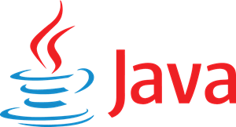
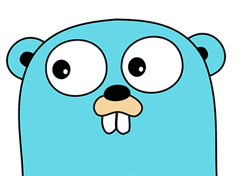
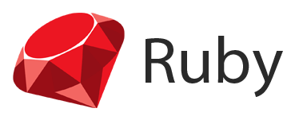

1. Python

When Guido van Rossum developed Python in the 1990s as his side project, nobody has thought it would be the most popular programming language one day. Considering all well-recognized rankings and industry trends, I put Python as the number one programming language overall.
Python has not seen a meteoric rise in popularity like Java or C/C++. Also, Python is not a disruptive programming language. But from the very beginning, Python has focused on developer experience and tried to lower the barrier to programming so that school kids can also write production-grade code.
In 2008, Python went through a massive overhaul and improvement with the cost of introducing significant breaking changes by introducing Python 3.
Today, Python is omnipresent and used in many areas of software development, with no sign of slowing down.
2. JavaScript

During the first browser war, Netscape had assigned Brendan Eich to develop a new programming language for its Browser. Brendan Eich had developed the initial prototype in only ten days, and the rest is history. Software developers often ridiculed JavaScript in its early days because of its poor language design and lack of features.
Over the years, JavaScript has evolved into a multi-paradigm, high-level, dynamic programming language. The first significant breakthrough of JavaScript came in 2009 when Ryan Dahl has released cross-platform JavaScript runtime Node.js and enabled JavaScript to run on Server Side.
The other enormous breakthrough of JavaScript came around 2010 when Google has released a JavaScript based Web development framework AngularJS.
Today, JavaScript is one of the most widely used programming languages in the world and runs on virtually everywhere: Browsers, Servers, Mobile Devices, Cloud, Containers, Micro-controllers.
3. JAVA

Java is one of the most disruptive programming languages to date. Back in the ’90s, business applications were mainly developed using C++, which was quite complicated and platform dependent. James Gosling and his team in Sun lowered the barrier to develop business applications by offering a much simpler, object-oriented, interpreted programming language that also supports Multi-threading programming.
Java has achieved Platform independence by developing Java Virtual Machine (JVM), which abstracted the low-level Operating System from developers and gave the first “Write Once, Run anywhere” programming language. Also, JVM offered generation garbage collection, which manages the Object life cycle.
In recent years, Java has lost some of its markets to highly developer-friendly modern languages and the rise of other languages, especially Python, JavaScript. Also, JVM is not quite Cloud friendly because of its bulky size. Oracle has recently introduced hefty licensing fees for JDK, which will dent Java’s popularity further.
Fortunately, Java is working on its shortcomings and trying to make Java fit for Cloud via the GraalVM initiative. Also, in OpenJDK, there is a free alternative to the proprietary Oracle JDK.
Java is still the number one programming language for enterprises.
4. C#

In 2000, Tech giant Microsoft decided to create their Object Oriented C like programming language C# as part of their .NET initiative, which will be managed (run on a Virtual Machine like Java). The veteran language designer Anders Hejlsberg designed C# as part of Microsoft’s Common Language Initiative (CLI) platform where many other (mainly Microsoft’s languages) compiled into an intermediate format which runs on a Runtime named Common Language Runtime (CLR).
During the early days, C# was criticized as an imitation of Java. But later, both of the languages diverged. Also, Microsoft’s licensing of C# compiler/runtime is not always clear. Although Microsoft is currently not enforcing its patents under the Microsoft Open Specification Project, it may change.
Today, C# is a multi-paradigm programming language that is widely used not only on the Windows platform but also on the iOS/Android platform (thanks to Xamarian) and Linux platform.
5. C

During the 1960s and 1970s, every cycle of the CPU and every byte of memory was expensive. Dennis Ritchie, a Bell lab engineer, has developed a procedural, general-purpose programming language that is compiled directly to machine language during the 1969–1973. C programming offers low-level access to memory and gives full control over the underlying hardware.
Over the years, C became one of the most used programming languages. Besides, C is arguably the most disruptive and influential programming language in history and has influenced almost all other languages on this list.
Although C is often criticized for its accidental complexity, unsafe programming, and lack of features. Also, C is platform-dependent, i.e., C code is not portable. But if you want to make the most use of your hardware, then C/C++ or Rust is your only option.
6. C++

Bjarne Stroustrup has worked with Dennis Ritchie (creator of C) in Bell Lab during the 1970s. Heavily influenced by C, he first created C++ as an extension of C, adding Object-Oriented features. Over time, C++ has evolved into a multi-paradigm, general-purpose programming language. Like C, C++ also offers low-level memory access and directly compiled to machine instructions.
C++ also offers full control over hardware but with the cost of accidental complexity and does not provide language-level support for memory safety and concurrency safety. Also, C++ offers too many features and is one of the most complicated programming languages to master.
For all these factors and its platform dependency, C++ has lost its popularity to Java in especially enterprise software development and Big Data domain in the early 2000s.
C++ is once again gaining popularity with the rise of GPU, Containerization, Cloud computing, as it can quickly adapt itself to take advantage of Hardware or Ecosystem changes.
Today, C++ is one of the most important and heavily used programming languages in the industry.
7. PHP

Like Python, PHP is another programming language developed by a single developer as a side project during the ’90s. Software Engineer Rasmus Lerdorf has initially created PHP as a set of Common Gateway Interface binaries written in C to create dynamic Web Applications. Later, more functionalities were added to the PHP product, and it organically evolved into a fully-fledged programming language.
At present, PHP is a general-purpose, dynamic programming language mainly used to develop server-side Web applications.
With the rise of JavaScript based client-side Web application development, PHP is losing its appeal and popularity, and PHP is past its prime. Contrary to popular belief, PHP will not die soon, although its popularity will gradually diminish.
8. Swift

Swift is one of the only two programming languages that has also appeared in my list: “Top 7 modern programming languages to learn now”. A group of Apple engineers led by Chris Lattner has worked to develop a new programming language Swift mainly to replace Objective-C in the Mac and iOS platforms.
It is a multi-paradigm, general-purpose, compiled programming language that also offers high developer productivity. Swift supports LLVM (developer by Chris Lattner) compiler toolchain like C/C++, Rust.
Swift has excellent interoperability with Objective-C codebase and has already established itself as the primary programming language in iOS App development. As a compiled and powerful language, Swift is gaining increasing popularity in other domains as well.
9. GO

Like Swift, Go is only the second programming language from the last decade in this list. Also, like Swift, Go is created by a Tech giant.
In the last decade, Google has frustratingly discovered that existing programming languages cannot take the seemingly unlimited hardware, human resources of Google. For example, compiling the C++ codebase of Google took half an hour. Also, they wanted to tackle the development scaling issue in the new language.
Renowned Software Engineers Rob Pike (UTF-8) and Ken Thompson (UNIX OS) in Google has created a new, pragmatic, easy-to-learn, highly scalable system programming language Go and released in 2012. Go has a runtime and Garbage collector (a few Megabytes), but this runtime is packed in the generated executable.
Although Go is a bit feature anemic, it has become a mainstream programming language in a short period.
10. Ruby

Ruby is the third programming language in this list developed by an individual developer during the 1990s. Japanese computer scientist Yukihiro Matsumoto has created Ruby as an “Object-Oriented Scripting language” and released in 1995.
Ruby has later evolved into an interpreted, dynamically typed, high-level, multiple-paradigm general-purpose programming language. Ruby is implemented in C and offers garbage collection.
Like Python, Ruby focused heavily on developer productivity and developer happiness. Although Ruby is not one of the hyped languages at this moment, it is an excellent language for new developers for a flat learning curve.